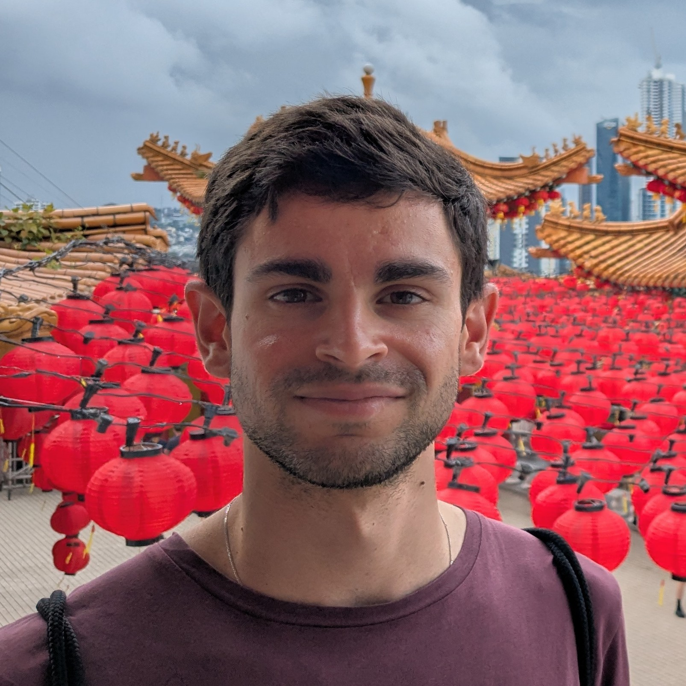
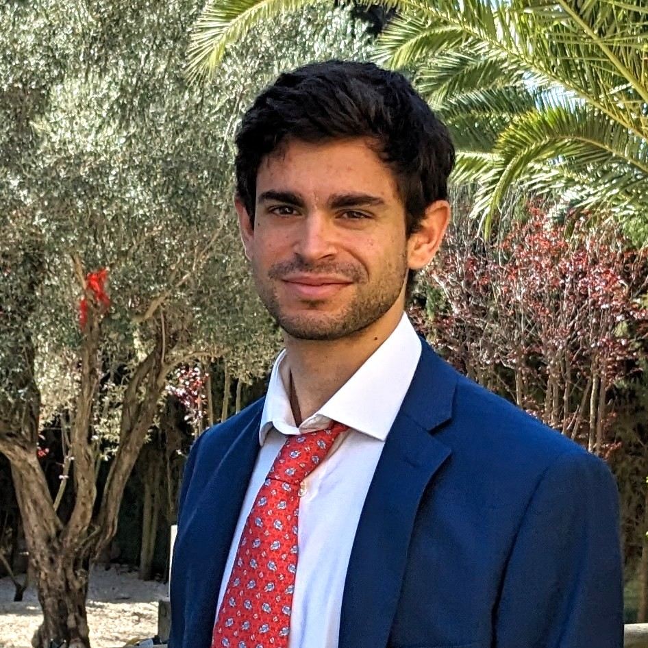
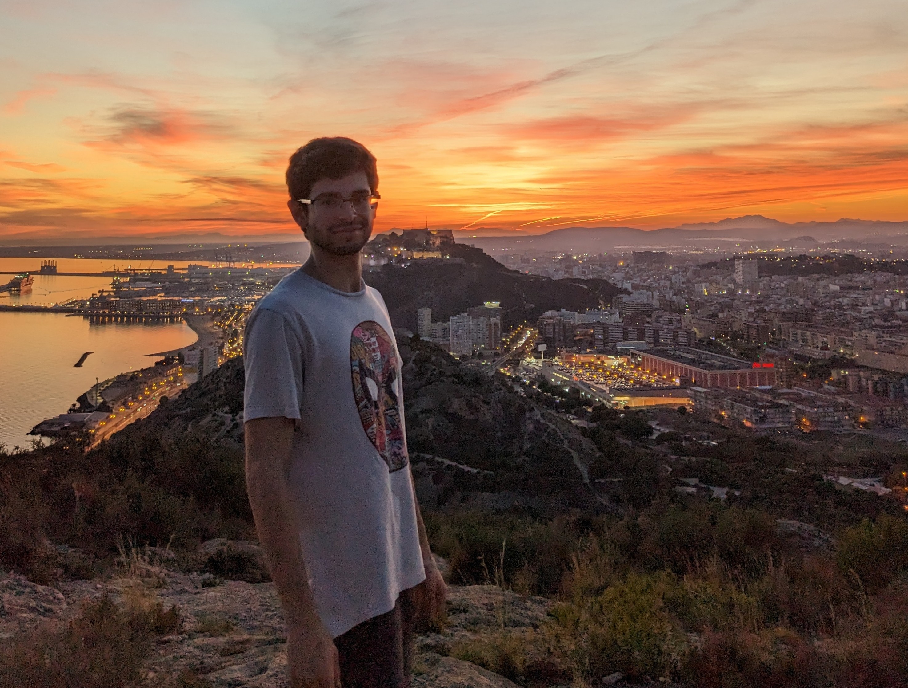
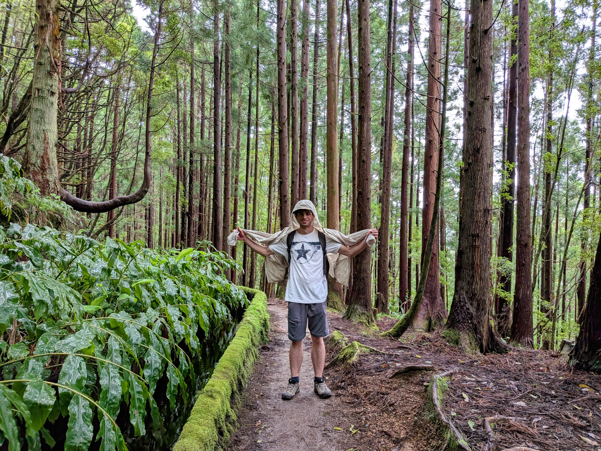
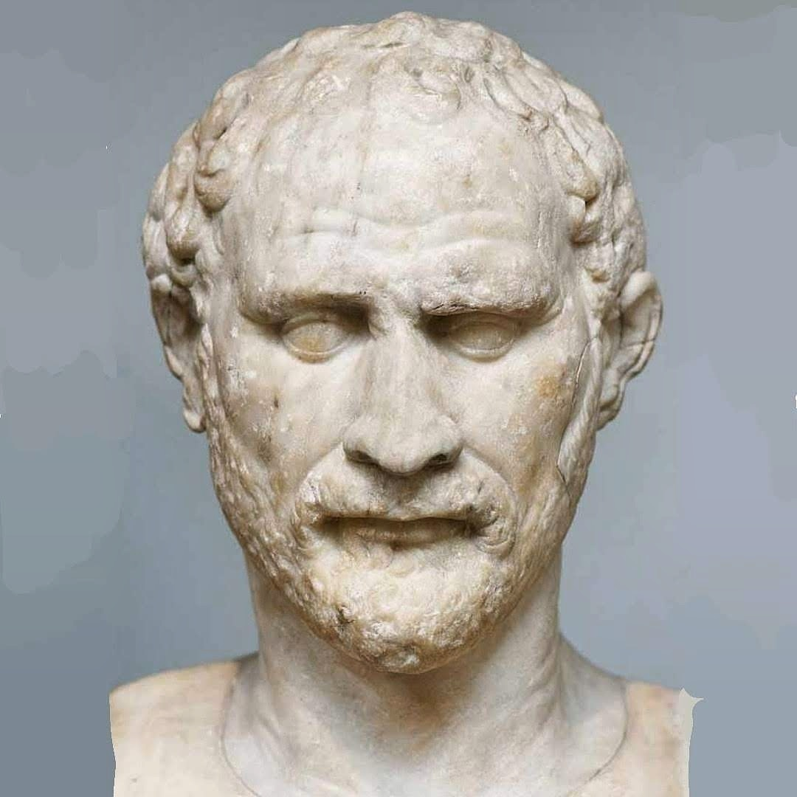
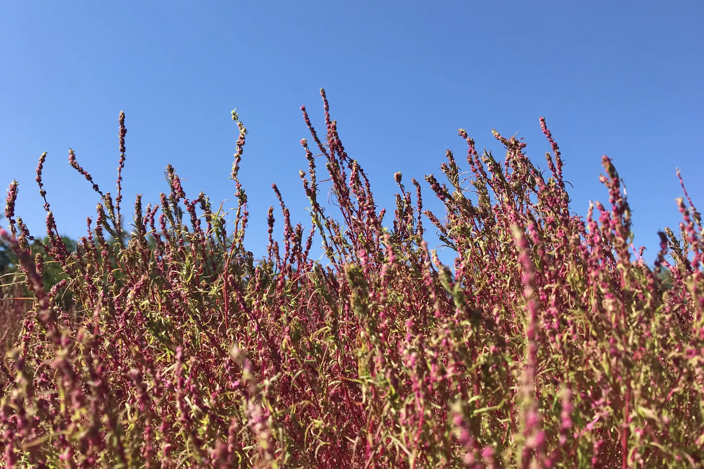

Josué Pérez Sabater
-
 Madrid, Spain
Madrid, Spain
-
 Predoctoral Researcher at UC3M
Predoctoral Researcher at UC3M
About
Hi! I'm Josu. Biomedical engineer and PhD student, currently working as a researcher. I'm calm, meticulous, hard-working, and a decent programmer. I do my best to live consciously, mindful of others and the environment. I'm especially passionate about putting my skills at the service of the community and society. I enjoy reading, traveling, thinking things through, and also organizing stuff — sometimes a bit too much.
Please have a look around. If anything here resonates with you, or you think we could work on something together, feel free to reach out — I'd love to hear from you :).
Academic profile

Work
Studies
Get to know me
scintilla novae humanitatis




Born in Alicante (Spain), raised in Madrid. Steady and perfectionist by nature, I like organizing (or cleaning) stuff just to calm myself. I read often, think more, and write occasionally. I'm drawn to nature, which probably fuels my desire to protect it. I enjoy long hikes and deep travel, often finding beauty in the world around me.
The Latin words scintilla novae humanitatis, spark of a new humanity
(Pope Leo XIV), work for me as a guiding principle in my life:
an exhortation to observe the world, reach the truth within it, and transform it into a better place.
Projects

Baúl de Demóstenes
Repository with personal texts of a philosophical, social, ethical or opinion nature. Texts are in Spanish.

Earth Gallery
🌍 Earth Gallery is a collection of photographs that show the beauty of our Earth and everything on it.